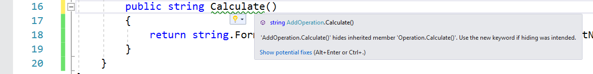

Duration
20 minutes
Lab goals
In this exercise you will extend your application to make the base Operation class have a virtual method which is then overridden by each of the derived classes. You will then make the base class abstract so it cannot be used on it's own.
Required Assets
You can either continue from the previous exercise, or use the Completed solution from Exercise 1 as a starting point for this exercise.
Steps
Add a virtual method to the Operation class
For our first step, let's add the Calculate method as a virtual method to the base Operation class that all our math operations are deriving from.
- Open the Operation.cs file you created in the previous exercise.
-
Add a new method named
Calculatethat takes no parameters and returns a string. -
Since the method must return a string, just return an empty
""string for now. -
Add the
virtualkeyword to the base classCalculatemethod. -
Switch over to each of your derived methods and add the
overridekeyword to indicate this is a virtual method you are overriding. If you miss one, the compiler will remind you with a nice error message!
Try to compile the application - you should get a warning from the compiler indicating that our derived classes are hiding the new method that's in our base class.

By default, methods are not virtual - therefore the Calculate method declared on the AddOperation class is different than the one declared on the base class - even though they have the same parameters and return type. This is a very common bug in programs because depending on how you call this method, you will get different results! The proper way to fix this is to mark the base method as virtual and then override it in each of our derived classes.
Treat the classes polymorphically
Now that the Calculate method is declared on the base class, we can modify our code to work with all our calculation operations through the base class - e.g. treat them as polymorphic.
- Open the Program.cs file and remove the code that is currently creating and working with the operation types.
-
Create a
List<Operation>and add each of your operation types to it using thenewkeyword. -
Use a
foreachloop to callCalculateon each of the operation types, printing the result of each call into the console. - Your code should look something like this:
- Run the application - you should get the exact same output as before, but now the code is going through the base class method - in other words we don't care which object we are working with.
-
Try placing a breakpoint in the
Calculatemethod of one of the operations to see it get called.
List<Operation> operations = new List<Operation>();
operations.Add(new AddOperation(10, 20));
operations.Add(new MultiplyOperation(10, 20));
// any other operations you have ..
foreach (Operation op in operations) {
// Call Operation.Calculate
Console.WriteLine(op.Calculate());
}
Make the base class abstract
The code works correctly right now, but there's a slight design issue with it currently. It's possible to create a Operation class directly and use it - but the results are just an empty value since it has not direct behavior on it's own. This is a perfect candidate for an abstract class.
-
Open Program.cs and add an
Operationobject into your list - it should build and run, but you will see a blank line in the output. -
Open the Operation.cs file and remove the implementation for
Calculate. Change thevirtualkeyword toabstractto indicate it has no implementation. -
Since we have an abstract method, we also need to make the class itself abstract. Add the
abstractkeyword to the class definition. -
Build the application - you should get a compile error trying to create the
Operationobject directly - since it's abstract, it cannot be created on it's own; you can only create a derived version of the operation. -
Remove the
Operationfrom your list and build and run the application to see it all work properly.
Summary
In this lab exercise, you created a list of polymorphic classes, iterated over the list calling a virtual method.